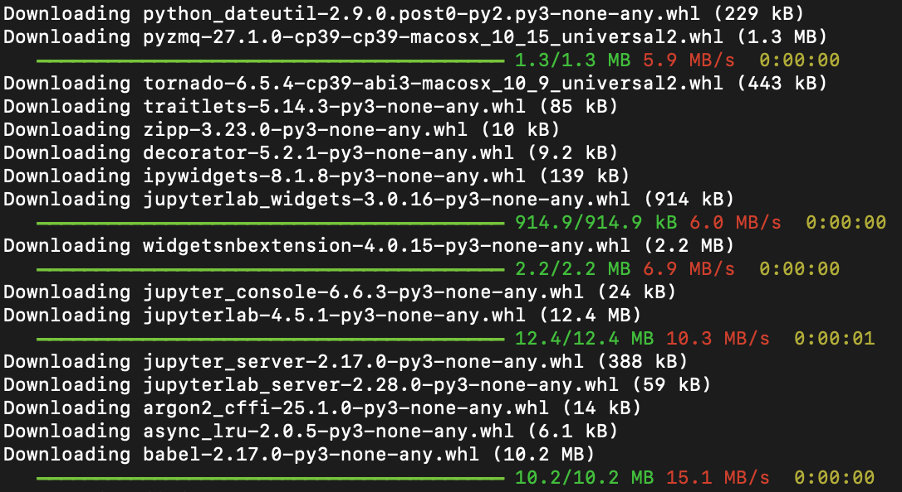
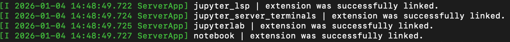

Instalación de Jupyter Notebook
Jupyter Notebook es unentorno informático interactivo basado en la web, que podemos imaginar como un cuaderno inteligente:
- Escribir notas: como usar Word, permite registrar texto, fórmulas e imágenes.
- Escribir y ejecutar código: escribes código Python directamente en las celdas, haces clic en ejecutar y ves el resultado al instante.
- Mostrar resultados: los gráficos y tablas de datos generados por el código se muestran directamente en el cuaderno.
Jupyter Notebook es especialmente adecuado paralimpieza de datos, análisis estadístico, entrenamiento de modelos de aprendizaje automático y visualización, porque puedes realizar todo el trabajo de código, resultados y explicación de ideas en un solo documento.
Preparación antes de la instalación: entorno de Python
Jupyter Notebook está escrito en Python, por lo que el requisito para instalarlo es que tu computadora ya tenga Python y una herramienta de gestión de paquetes.pip。
1. Comprobar si Python está instalado
Abre tuherramienta de línea de comandos：
- Windows: busca en el menú Inicio
cmdoSímbolo del sistema。 - macOS: abre
Aplicación->Utilidad->Terminal。 - Linux: usa los atajos de teclado
Ctrl + Alt + Tpara abrir la terminal.
En la ventana de línea de comandos abierta, escribe el siguiente comando y presiona Enter:
python --version
o
python3 --version
Si ves algo comoPython 3.8.10una salida de número de versión como esta (Importante: el número de versión debe ser 3.3 o superior), significa que Python ya está instalado.
2. Comprobar si pip está instalado
pippip es el administrador de instalación de software de Python; normalmente se instala junto con Python. El comando para comprobarlo es el siguiente:
pip --version
o
pip3 --version
Del mismo modo, si ves información de versión, significa quepippip también está listo.
3. Si Python no está instalado
Si tu computadora aún no tiene Python, no te preocupes, la instalación es muy sencilla.
Método recomendado: visitael sitio web oficial de Python, descarga la última versión estable (por ejemplo, Python 3.11.x). Al descargar,asegúrate de marcarAdd Python to PATHesta opción, esto te ahorrará la molestia de configurar manualmente las variables de entorno más adelante. Luego, como al instalar cualquier software común, haz clic enSiguientepara completar la instalación.

Una vez completada la instalación, repite los pasos 1 y 2 anteriores para confirmar que la instalación fue exitosa.
Instalar Jupyter Notebook con pip
Una vez que tengas Python y pip listos, instalar Jupyter Notebook solo requiere un comando.
En tu herramienta de línea de comandos, escribe el siguiente comando:
pip install jupyter
Análisis del comando：
pip: invoca la herramienta de gestión de paquetes de Python.install: le dice a pip que quieres instalar algo.jupyter: el nombre del paquete que se va a instalar.
Después de presionar Enter, verás que la línea de comandos comienza a descargar e instalar Jupyter Notebook y sus componentes relacionados.

Nota: si usas macOS o Linux, o si encuentras problemas de permisos, es posible que necesites usar
pip3o anteponer al comandosudo（macOS/Linux）：
pip3 install jupytersudo pip install jupyter(se te pedirá la contraseña de la computadora)Si la instalación es lenta, puedes usar un espejo (mirror) del país:
pip3 install jupyter -i https://pypi.tuna.tsinghua.edu.cn/simple
Verificación de instalación exitosa: Una vez finalizada la instalación, puedes ingresar el siguiente comando para ver la versión de Jupyter y asegurarte de que la instalación sea correcta:
jupyter --version
Si se muestra información de versión, por ejemplojupyter core : 5.8.1, ¡significa que la instalación fue exitosa!
Selected Jupyter core packages... IPython : 8.18.1 ipykernel : 6.31.0 ipywidgets : 8.1.8 jupyter_client : 8.6.3 jupyter_core : 5.8.1 jupyter_server : 2.17.0
Si aparece un error comozsh: command not found: jupyter, el motivo es que la terminal zsh no ha cargado las variables de entorno de Jupyter. La solución es:
- 1. Primero verifica si Jupyter se instaló correctamente, escribe pip3 show jupyter, si muestra información de versión, la instalación fue exitosa.
- 2. Ejecutaecho 'export PATH="$HOME/Library/Python/3.x/bin:$PATH"' >> ~/.zshrc (reemplaza 3.x por la versión real de Python, por ejemplo, 3.9)。
- 3. Escribesource ~/.zshrcpara actualizar la configuración, y luego escribejupyter notebookpara iniciarlo. Si aún no funciona, reinicia la terminal y vuelve a intentarlo.
Instalar Jupyter Notebook con Anaconda
Anaconda es una herramienta de gestión de entornos de ciencia de datos en Python que incluye el intérprete de Python, Jupyter Notebook y bibliotecas de terceros de uso común para análisis de datos (como Pandas, NumPy). Con un solo paso de instalación se resuelven todas las dependencias, sin necesidad de configuración adicional.
Usar Anaconda permite configurar todos los entornos con un solo clic, lo que reduce los conflictos de versiones que pueden ocurrir al instalar bibliotecas manualmente.
Tutorial de Anaconda:https://www.runoob.com/python-qt/anaconda-tutorial.html
-
Sitio web oficial de Anaconda:https://anaconda.org/。
Pasos
1. Descargar Anaconda:Visitael sitio web oficial de Anaconday descarga el instalador adecuado para tu sistema operativo (Windows, macOS, Linux).

2. Instalador: ejecuta el archivo .exe o .pkg descargado. Durante la instalación se recomienda marcarAdd Anaconda to my PATH(aunque no es recomendado oficialmente, para los principiantes es mucho más conveniente iniciarlo directamente desde la línea de comandos).

3. Verificar la instalación de Anaconda: una vez completada la instalación, abre el símbolo del sistema (Windows) o la terminal (macOS/Linux) e introduce el comando:
conda --version
Si se muestra el número de versión (como conda 23.10.0), la instalación fue exitosa.
4. Iniciar Jupyter Notebook: abre Anaconda Navigator (en Windows se encuentra en el menú Inicio, en macOS en Launchpad). En la interfaz se mostraráJupyter Notebook, haz clic enLaunchel botón y, después de esperar unos segundos, se abrirá automáticamente la interfaz de Jupyter Notebook en el navegador predeterminado.

jupyter notebook
Después de presionar Enter, se mostrará un mensaje de inicio exitoso:

El navegador web predeterminado (como Chrome, Firefox) abrirá automáticamente una nueva página, cuya dirección suele ser http://localhost:8888; este es el panel de control de Jupyter Notebook: